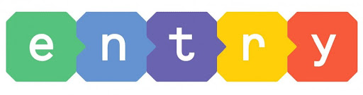

교육 사이트

Entry
엔트리(Entry)는 블록을 조립하는 방식으로 코딩하는 그래픽 기반 소프트웨어 교육 플랫폼이다.
(출처: namu wiki)
Reading Gate
리딩게이트(ReadingGate)는 온라인으로 운영되고 있는 영어 학습 프로그램이다. 영어 도서를 읽고 문제를 푸는 방식으로 진행된다.
(출처: namu wiki)
EBSi
EBSi는 EBS에서 운영하는 고등학생 인터넷 강의 사이트이다.
(출처: namu wiki)